8. The Origins of Unix and the C Language
In the 1960s, while MIT was busy developing the Incompatible Timesharing System (ITS), another place on the East Coast was buzzing with the same hacker energy: AT&T Bell Laboratories. This was where Unix and C, two creations that would change computing, were taking shape.
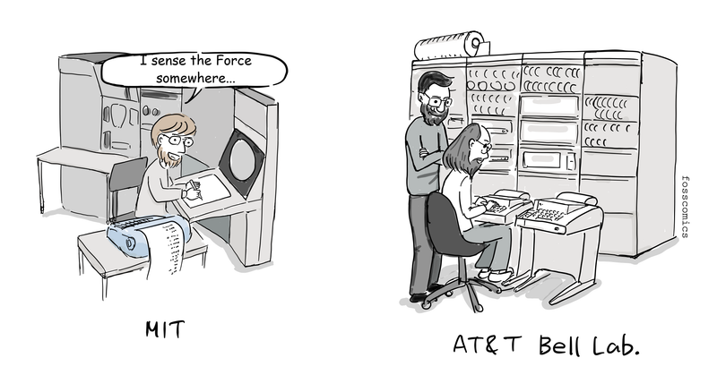
"I sense the Force somewhere..."
ITS and Unix came from different groups. At Bell Labs, people who had worked on Multics stepped away and began building Unix. At the center of the effort were Ken Thompson, Dennis Ritchie, and Joe Ossanna.
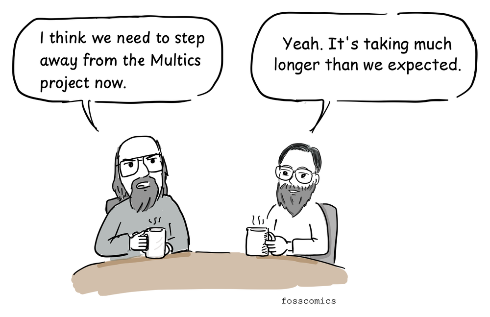
"I think we need to step away from the Multics project now."
"Yeah. It's taking much longer than we expected."
The Multics project began in 1964. But as the code grew larger and more complicated, the project fell far behind Bell Labs' expectations.
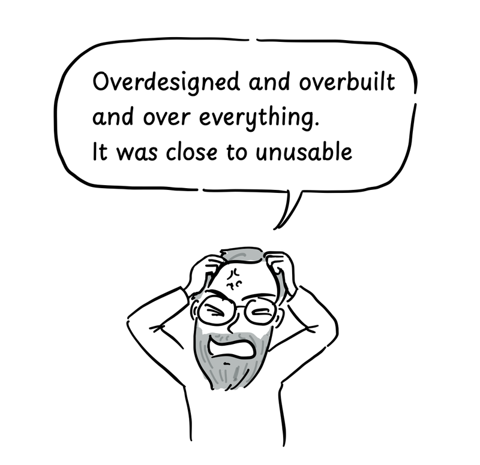
"Overdesigned and overbuilt and over everything."
"It was close to unusable.[1]"
In the end, Bell Labs pulled out of Multics in 1969. Work continued elsewhere, and Multics later became a working commercial system. For Bell Labs, though, it had simply taken too long and cost too much.
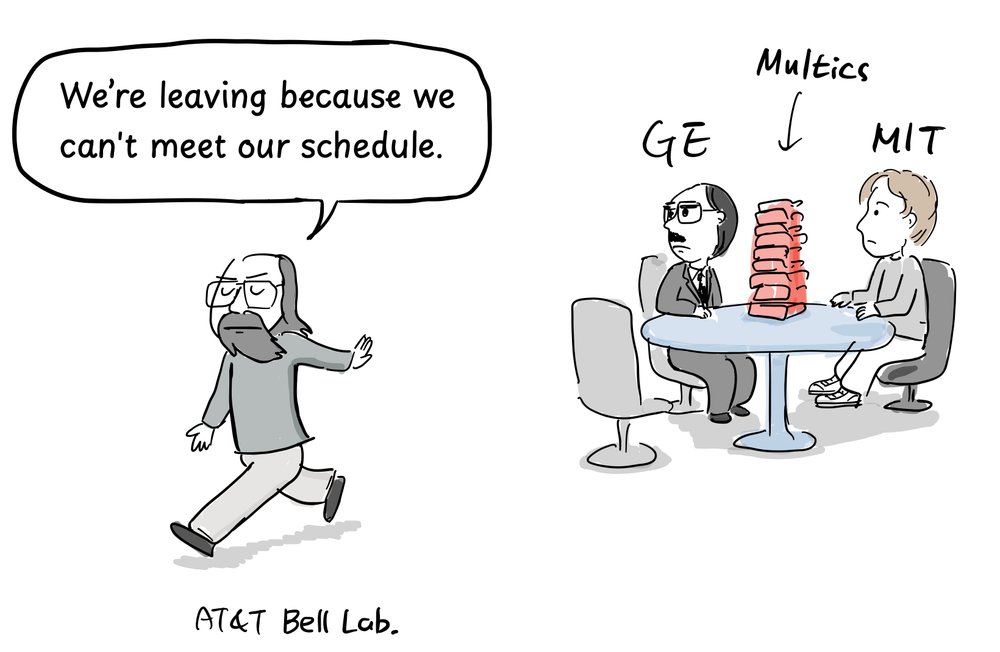
"We're leaving because we can't meet our schedule."
Back at Bell Labs, Thompson drew on his Multics experience and led the effort to build a smaller, simpler operating system.
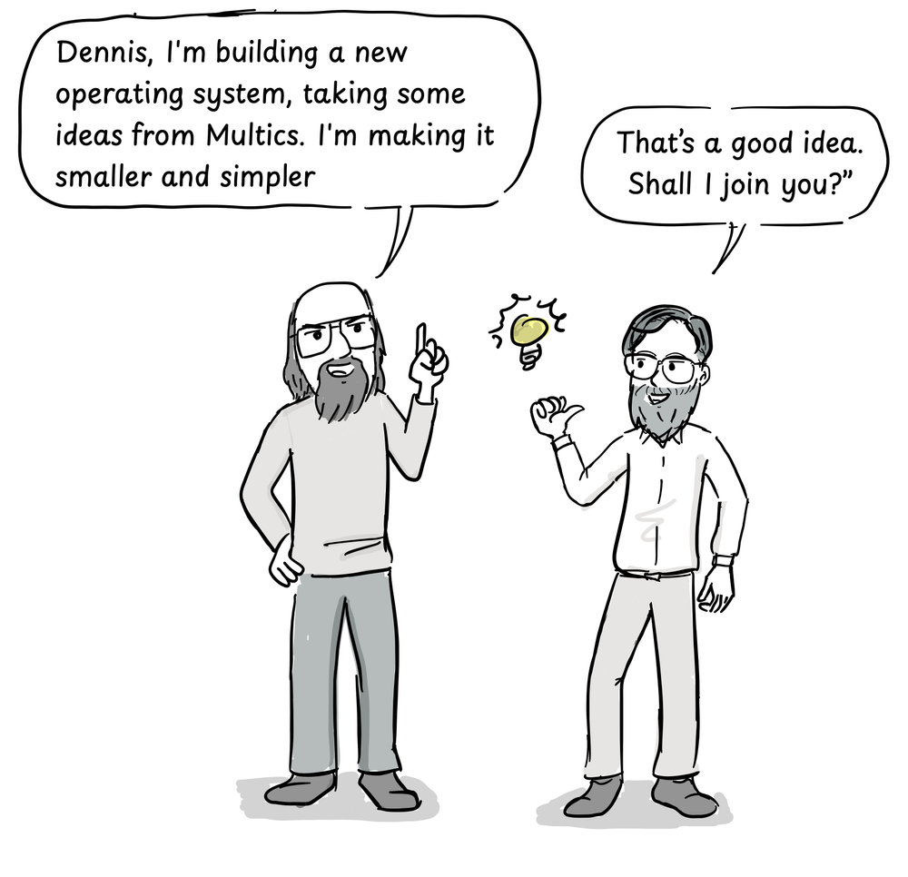
"Dennis, I'm building a new operating system, taking some ideas from Multics. I'm making it smaller and simpler."
"That's a good idea. Shall I join you?"
Thompson brought several ideas from Multics into Unix, but rebuilt them in a much simpler form.
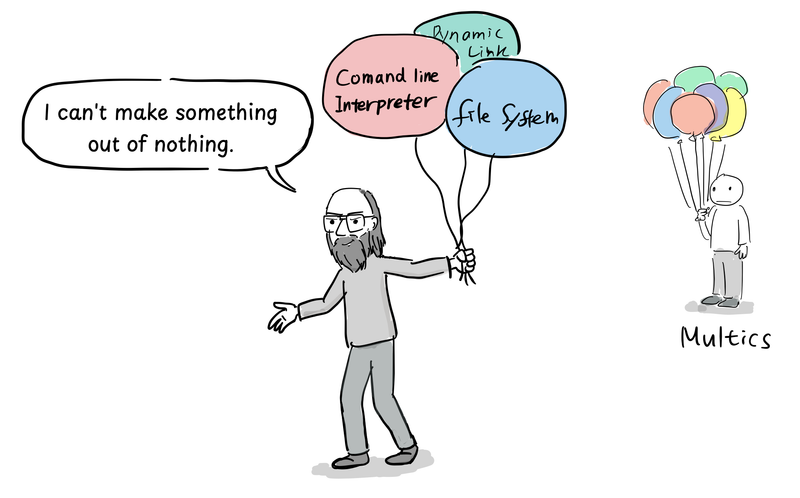
"I can't make something out of nothing."
First came a file system, sketched out by Thompson, Rudd Canaday, and Ritchie. Thompson did most of the design and put it to work on a little-used PDP-7. Ritchie added the idea of device files. Processes, utilities, and a command interpreter followed, with Ossanna and other colleagues joining in as the system grew.[2]
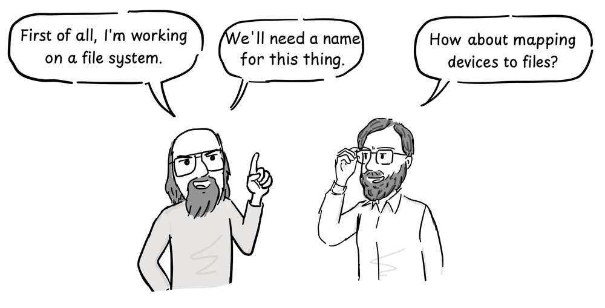
"First of all, I'm working on a file system."
"We'll need a name for this thing."
"How about mapping devices to files?"
It was not called Unix at first. Well into 1970, Brian Kernighan suggested the name as a play on "Multics."
Then a PDP-11 arrived. Its CPU instructions were different from the PDP-7's, and Unix was still written in assembly. The code had to be written all over again.
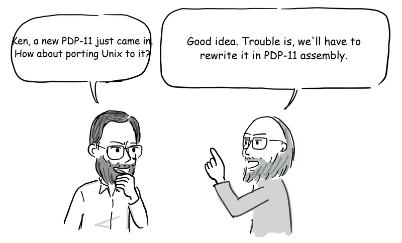
"Ken, a new PDP-11 just came in. How about porting Unix to it?"
"Good idea. Trouble is, we'll have to rewrite it in PDP-11 assembly."
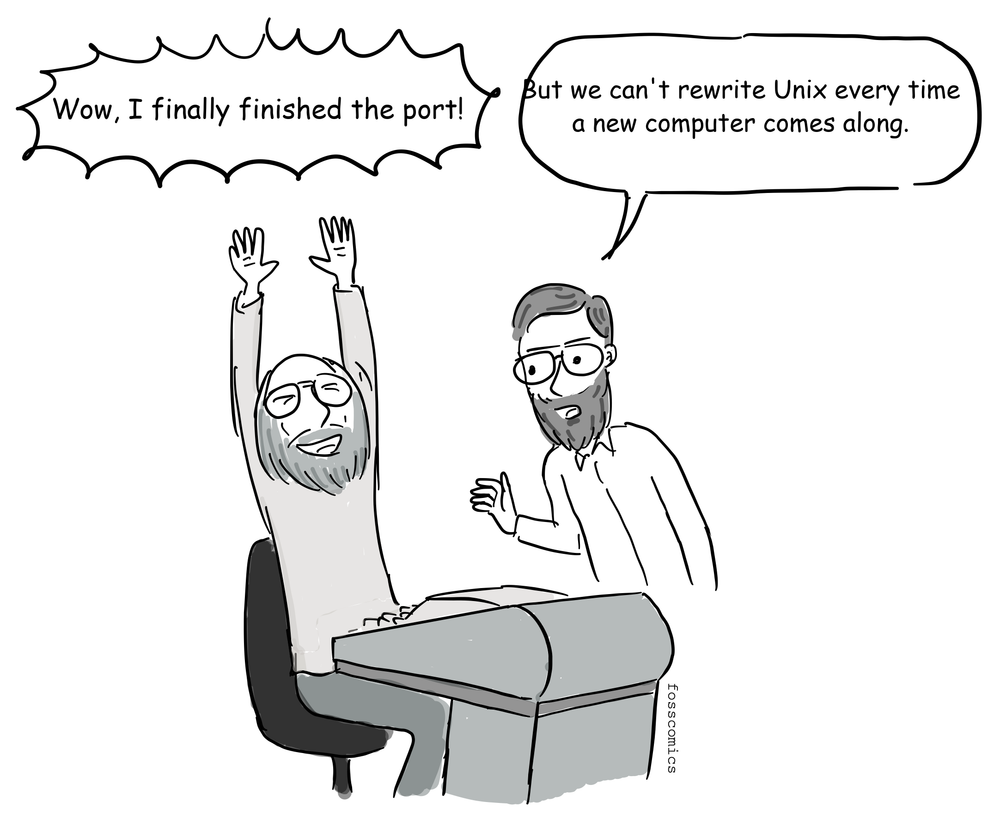
"Wow, I finally finished the port!"
"But we can't rewrite Unix every time a new computer comes along."
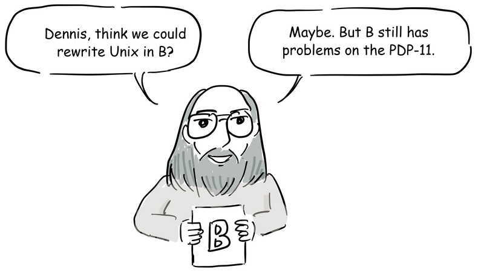
"Dennis, think we could rewrite Unix in B?"
"Maybe. But B still has problems on the PDP-11."
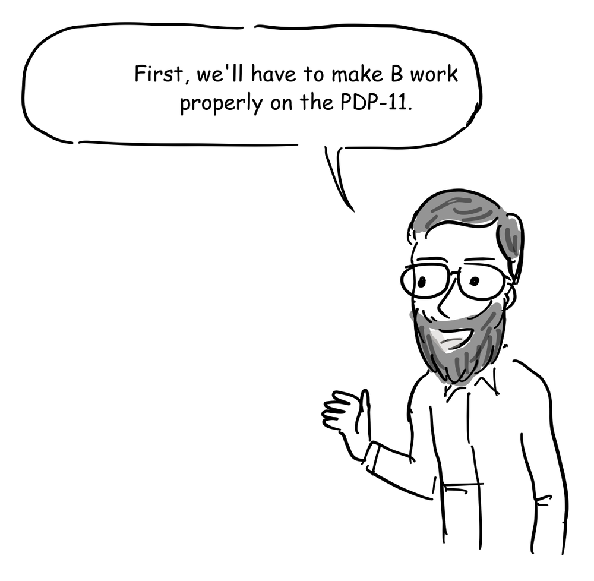
"First, we'll have to make B work properly on the PDP-11."
At the time, that was easier said than done. Thompson had created B for the early Unix environment around 1969–70, building it from BCPL. It was small enough for the PDP-7, but the code it produced was much slower than assembly. B also treated everything as a machine word, which made it awkward to use on the byte-addressed PDP-11. Rewriting all of Unix in B was considered only briefly.[3]
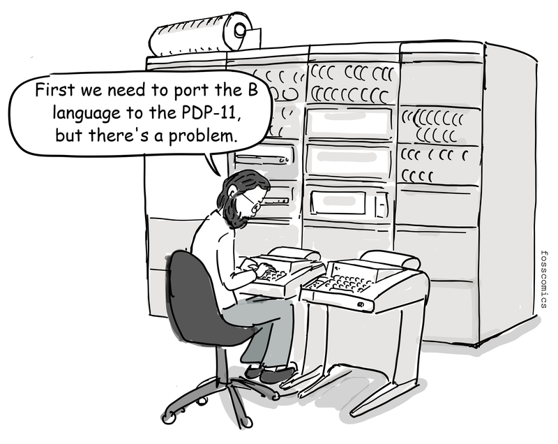
"First we need to port the B language to the PDP-11, but there's a problem."
In 1971, Ritchie began extending B with a character type and an explicit type system that included int and char. He also rewrote the compiler to generate PDP-11 machine code directly, instead of slower threaded code that invoked a sequence of prewritten low-level routines. He called the short-lived language NB, for "New B."[3]
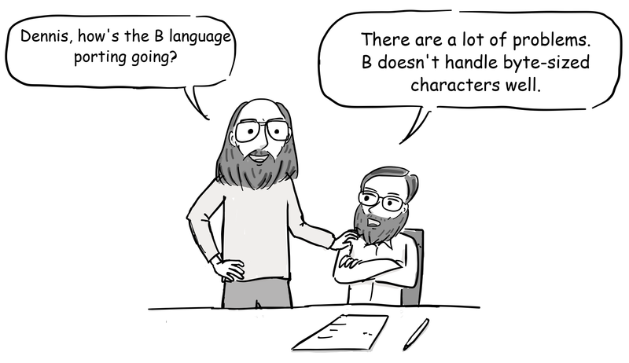
"Dennis, how's the B language porting going?"
"There are a lot of problems. B doesn't handle byte-sized characters well."
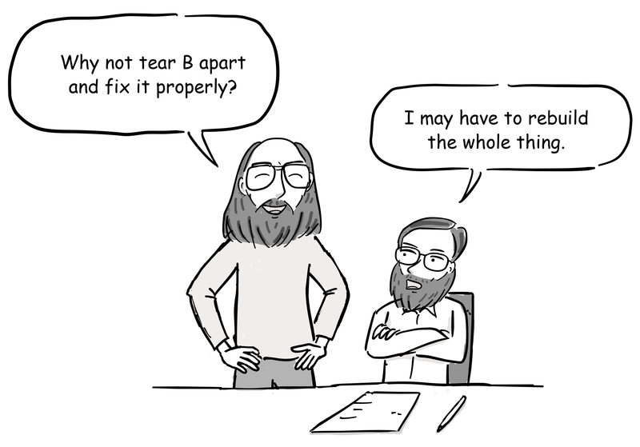
"Why not tear B apart and fix it properly?"
"I may have to rebuild the whole thing."
So Ritchie began tearing B apart and rebuilding it. During 1972, he expanded its type system, reworked arrays and pointers, added structures, and wrote a new compiler. When the new language took shape, he called it C. Whether the name meant the letter after B or continued the letters in BCPL, Ritchie left open. By early 1973, the essentials of modern C were in place.
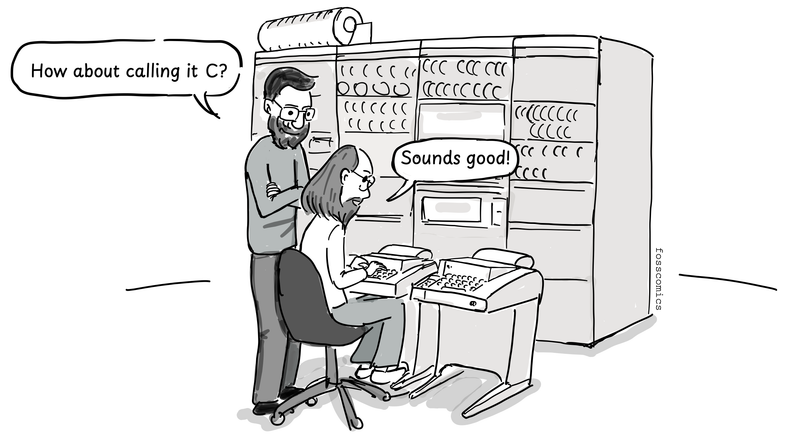
"How about calling it C?"
"Sounds good"
In the summer of 1973, Thompson, Ritchie, and their colleagues rewrote the Unix kernel in C.
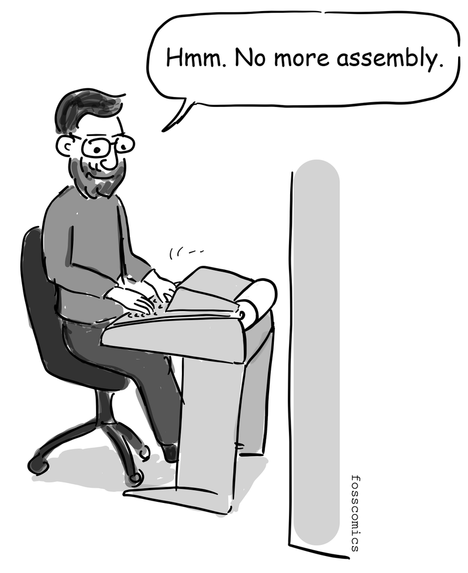
"Hmm. No more assembly."
Structures were especially useful. They let C describe data such as Unix directory entries in a way that matched how it was laid out in memory. Now C was powerful enough to write a Unix kernel.
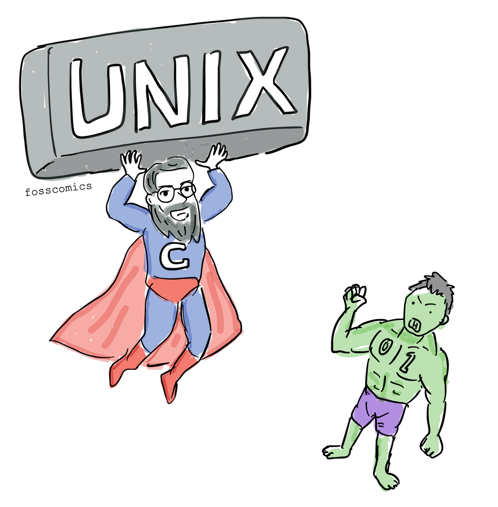
And so Unix and C came together in a remarkably short time, through the work of Thompson, Ritchie, and their Bell Labs colleagues. Unix and Unix-like systems still run on countless servers, personal computers, and phones. And C is still used to build operating-system kernels and other systems software today.
Readings from the Computer History Museum
- David C. Brock, the earliest unix code: an anniversary source code release, CHM
References
- Multics, Wikipedia
- Dennis M. Ritchie, The Evolution of the Unix Time-sharing System
- Dennis M. Ritchie, The Development of the C Language